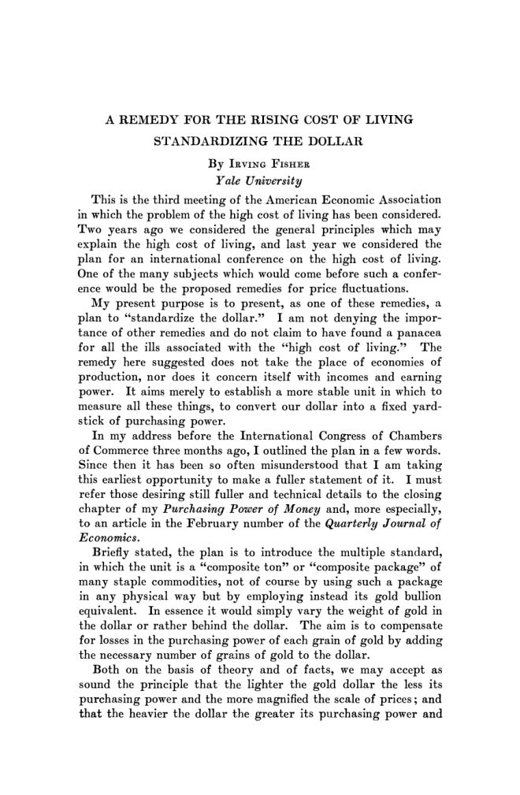

Fisher, 1912: um dólar de poder de compra fixo e peso variável
Leitura: 7 min
Fisher propõe mudar o peso de ouro do dólar conforme um índice de preços. Os debatedores aceitam o princípio e duvidam da execução; ele responde com um exemplo numérico e com a exigência de acordo internacional.


Um trabalhador que pusera US$ 100 na caderneta quinze anos antes e agora sacava US$ 150 imaginava ter 50% a mais. Ao gastar, descobria que os US$ 150 compravam o mesmo que US$ 100 em 1896. É com esse exemplo que Irving Fisher, de Yale, resume diante da American Economic Association, em dezembro de 1912, o problema que quer resolver: a depreciação do ouro lhe tirara todos os juros.
Era a terceira reunião seguida da associação dedicada ao custo de vida. Fisher deixa claro que não oferece panaceia: o plano não substitui economias na produção nem trata de renda. Pretende apenas dar ao comércio uma unidade estável para medir tudo isso, transformar o dólar numa régua fixa de poder de compra.
Como mudar o peso do dólar sem recunhar moedas?
O ponto de partida é a circulação real. Fora da Califórnia, diz Fisher, quase não circulavam moedas de ouro; circulavam quase um bilhão de dólares em certificados de ouro, lastreados por barras no Tesouro. O dólar efetivo era, portanto, invisível: 25,8 grãos de ouro, com nove décimos de pureza, guardados em Washington para cada dólar de certificado. O minerador entregava ouro e recebia certificados nessa proporção; o joalheiro ou o exportador fazia o caminho inverso.
“Temos hoje um dólar de peso fixo (25,8 grãos), mas de poder de compra variável.” (“We now have a dollar of fixed weight (25.8 grains), but varying purchasing power.”)
O plano inverte a relação. Se o poder de compra do ouro caísse 1%, o dólar virtual passaria a valer 1% mais de ouro, 26,058 grãos em vez de 25,8. Dito de outro modo, o governo, que comprava e vendia ouro a US$ 18,60 a onça, passaria a comprá-lo e vendê-lo a US$ 18,42. As notas no bolso não mudariam de aparência; mudaria apenas a quantidade de ouro que cada uma permite resgatar.
Quem decidiria o novo peso?
A segunda objeção que Fisher antecipa é o arbítrio político. A resposta são os números-índice de preços, já publicados pelo Economist de Londres, pelo Bureau of Labor americano, pelo Departamento do Trabalho do Canadá e por agências comerciais. O índice do Bureau of Labor cobria os preços no atacado de 257 mercadorias. Escolhido o sistema, o cálculo seria tarefa de escritório: cada desvio de 1% acima do par daria o sinal para um aumento de 1% no peso do dólar.
As moedas de ouro continuariam com 25,8 grãos e passariam a funcionar como fichas, como já era o dólar de prata, ou como certificados impressos em ouro. O excesso de ouro exigido para cada dólar seria uma senhoriagem, o que leva Fisher a descrever o plano como a restauração de um antigo costume. O limite estaria na queda de preços: o dólar virtual não poderia pesar menos que a moeda, senão ela seria fundida. Para esse caso, ele prevê retirar as moedas de circulação ou recunhá-las mais leves, como as Filipinas haviam feito com o peso.
Contra a especulação, Fisher propõe uma taxa de cunhagem de 1%, a brassagem, e a regra de que nenhuma mudança de preço do ouro excedesse essa margem. Sem ela, quem previsse a mudança de US$ 18 para US$ 18,10 compraria todo o ouro do Tesouro para revendê-lo logo depois. Para o lastro, os Estados Unidos já tinham 50 milhões de onças de ouro no Tesouro para resgatar US$ 900 milhões em certificados.
O que os debatedores objetaram?
Nat C. Murray, do Departamento de Agricultura, tratou antes do diagnóstico: a alta desde 1896 não vinha de escassez agrícola, porque a produção mundial dos cinco grandes cereais crescera 25% em dez anos, contra uma população 12% ou 13% maior. Albert C. Whitaker, de Stanford, aceitou toda a teoria monetária por trás do plano, mas negou que o ajuste pudesse ser mecânico: o efeito de uma mudança de senhoriagem sobre os preços dependeria da elasticidade da demanda de ouro para usos industriais, que ninguém conhecia.
Willard C. Fisher, da Wesleyan, atribuiu a alta ao aumento da oferta de ouro e lembrou que um índice com consequências financeiras atrairia pressões para moldá-lo. O. M. W. Sprague, de Harvard, sugeriu algo mais simples: um imposto internacional de 5% sobre o ouro levado à cunhagem. B. M. Anderson Jr., da Columbia, que não aceitava a teoria quantitativa, achou o plano viável por outro motivo e propôs, como alternativa acadêmica, um monopólio internacional das minas de ouro. Kemmerer apontou o risco maior: num só país, cada mudança no peso do dólar desorganizaria o câmbio e estimularia especulação com contratos a termo.
Como Fisher respondeu?
Fisher concordou com Kemmerer e disse defender o plano apenas por acordo internacional. Sobre o índice, argumentou que a inclusão ou exclusão de uma mercadoria raramente afetaria o resultado em 1%, e que o devedor comum não perceberia a diferença, assim como não percebia a depreciação do ouro. Sobre o custo, sustentou que bastaria um lastro de 50%.
A resposta mais técnica foi para a dúvida de Whitaker. Fisher supôs que os preços tendessem a subir 1% por trimestre e que cada 1% a mais no peso do dólar contivesse apenas meio ponto dessa alta. O sinal de ajuste cresceria a cada trimestre, e o índice se estabilizaria abaixo de 102. A regra não exige saber a elasticidade: o próprio desvio corrige o tamanho do ajuste.
Fisher reconheceu que a adoção poderia levar séculos e disse esperar apenas que sua geração de economistas lançasse as bases, discutindo o assunto a fundo.
Na minha leitura
Na minha leitura, o debate de Boston é um caso raro em que proponente e críticos concordam sobre a teoria e divergem sobre a engenharia. Whitaker e Anderson perguntam pelo coeficiente que liga o instrumento ao alvo; Fisher responde que, com uma regra de retroalimentação, o coeficiente não precisa ser conhecido, basta que tenha o sinal certo. É o mesmo argumento que sustenta qualquer regra de política que reage ao desvio observado em vez de depender de um modelo exato.
As objeções de Kemmerer e de Willard Fisher apontam os limites dessa solução. Um ajuste automático em um só país transfere a instabilidade para o câmbio, e um índice que passa a comandar contratos deixa de ser um número técnico e vira objeto de disputa. Fisher responde à primeira com o acordo internacional e à segunda com a pequena influência de cada mercadoria no índice.
Glossário
- Grão
- unidade de peso, 1/480 da onça troy; o dólar-ouro tinha 25,8 grãos.
- Dólar virtual
- quantidade de ouro que o Tesouro entrega ou recebe por dólar de certificado.
- Senhoriagem
- diferença entre o valor da moeda e o do metal que ela contém.
- Brassagem
- taxa cobrada pela cunhagem, que cria margem entre o preço de compra e o de venda do ouro.
- Número-índice
- média ponderada de preços que mostra a variação do nível geral em relação a uma base.
- Câmbio a termo
- contrato de compra ou venda de moeda estrangeira para entrega futura a preço fixado hoje.
Fontes
- A Remedy for the Rising Cost of Living: Standardizing the Dollar — Irving Fisher (Yale University); discussão de Nat C. Murray, Albert C. Whitaker, Willard C. Fisher, O. M. W. Sprague, B. M. Anderson Jr., R. R. Bowker e E. W. Kemmerer (pp. 20–51). JSTOR · Internet Archive (PDF)
- Edição completa, com os demais artigos: Nº 123 do Arquivo.
Documento em domínio público (EUA, publicado antes de 1931), via JSTOR Early Journal Content e Internet Archive. Resumo e comentário do autor deste site, sem afiliação com a American Economic Association. Encontrou um erro? Escreva: a correção é publicada no próprio texto, com data.
← Fetter, 1912: quando mais habitantes deixam de significar mais renda ↑ Nº 123 · Boston, 1912: população, dólar padronizado e os limites da regulação